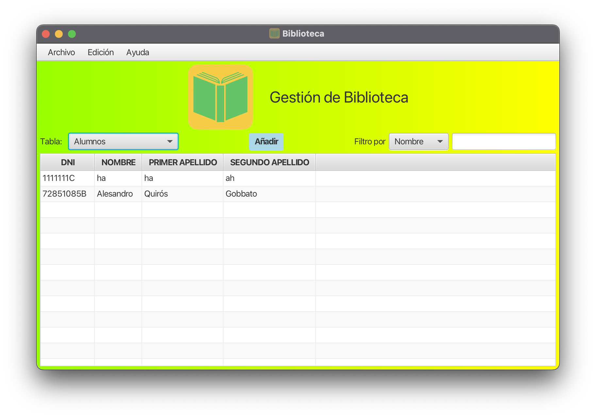

Menú Principal
Estructura de la Interfaz
La interfaz principal se compone de los siguientes elementos:
- Barra de Menú: Ubicada en la parte superior de la ventana.
- Encabezado: Muestra el título de la aplicación con un ícono.
- Panel de Control: Contiene opciones para seleccionar tablas, añadir registros y filtrar datos.
- Tabla de Datos: Muestra la información de libros o estudiantes.
Funcionalidades Principales
Barra de Menú
Archivo:
- Añadir: Agrega un nuevo registro (Atajo: Ctrl+N).
- Informes: Genera informes de libros, estudiantes o gráficos.
- Cerrar: Cierra la aplicación (Atajo: Ctrl+Q).
Editar:
- Editar: Modifica el registro seleccionado (Atajo: Ctrl+E).
- Eliminar: Borra el registro seleccionado (Atajo: Ctrl+Retroceso).
Ayuda:
- Ayuda HTML: Muestra la ayuda en formato HTML (Atajo: Ctrl+H).
- Ayuda PDF: Muestra la ayuda en formato PDF (Atajo: Ctrl+Shift+H).
- Idioma: Permite cambiar entre Español e Inglés.
Panel de Control
- Selección de Tabla: Elige entre diferentes tablas de datos.
- Botón Añadir: Agrega un nuevo registro a la tabla seleccionada.
- Filtro: Permite filtrar los datos mostrados en la tabla.
Tabla de Datos
Muestra la información de libros o estudiantes según la selección. Puedes seleccionar registros para editarlos o eliminarlos.
Consejos de Uso
- Utiliza los atajos de teclado para acceder rápidamente a las funciones más comunes.
- El botón de añadir en el panel central ofrece una forma rápida de agregar nuevos registros.
- Usa el filtro para buscar información específica en las tablas.
- Los menús desplegables te permiten cambiar entre diferentes vistas y opciones de filtrado.
Personalización
- Puedes cambiar el idioma de la aplicación entre Español e Inglés desde el menú de Ayuda.
